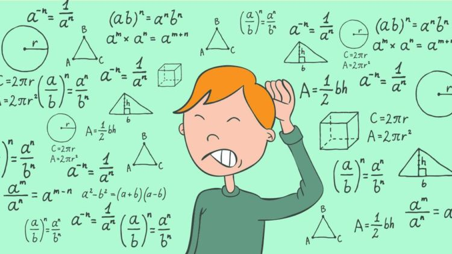

Sejarah matematika hampir sama tuanya dengan kemanusiaan itu sendiri. Sejak zaman purba, matematika telah menjadi dasar kemajuan ilmu pengetahuan, teknik, dan filsafat. Ini telah berevolusi dari penghitungan, pengukuran dan perhitungan sederhana, dan studi sistematis tentang bentuk dan gerakan benda fisik, melalui penerapan abstraksi, imajinasi dan logika, hingga disiplin luas, kompleks dan seringkali abstrak yang kita kenal sekarang.
Dari tulang awal manusia purba dengan kemajuan matematis yang ditimbulkan oleh pertanian menetap di Mesopotamia dan Mesir dan perkembangan revolusioner Yunani kuno dan kerajaan Helenistiknya, kisah matematika adalah masa yang panjang dan mengesankan.
Timur membawa tongkat, terutama China, India dan kerajaan Islam abad pertengahan, sebelum fokus inovasi matematis beralih kembali ke Eropa pada akhir Abad Pertengahan dan Renaisans. Kemudian, serangkaian perkembangan revolusioner baru terjadi pada abad ke-17 dan Eropa Abad ke-18, yang merupakan panggung bagi kompleksitas dan abstraksi matematika Abad 19 yang semakin meningkat, dan akhirnya penemuan yang berani dan terkadang menghancurkan pada abad ke-20.